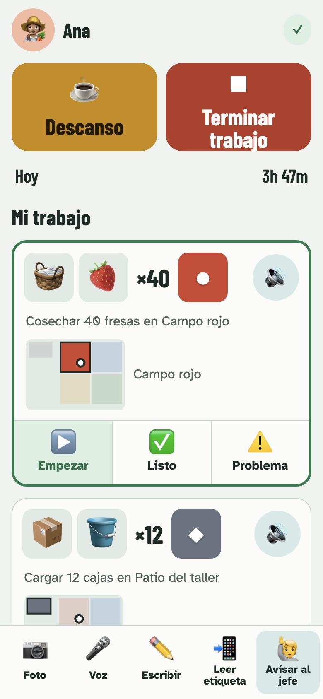
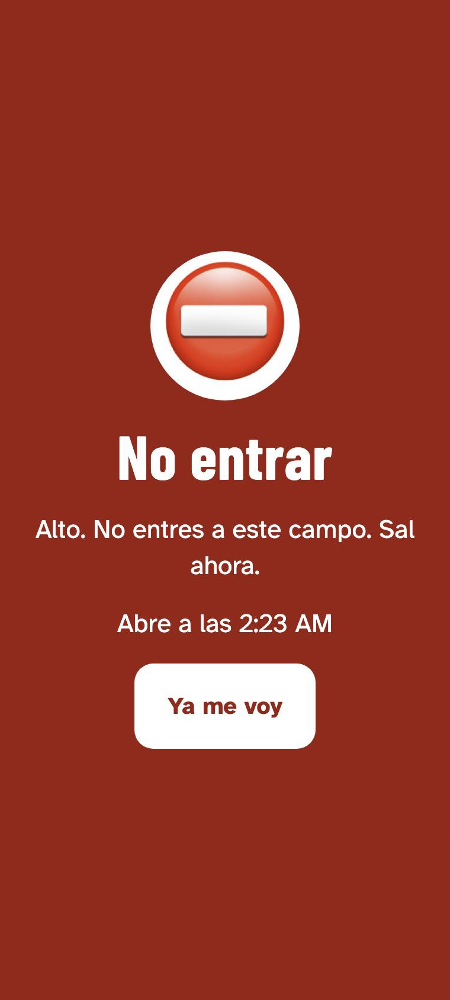
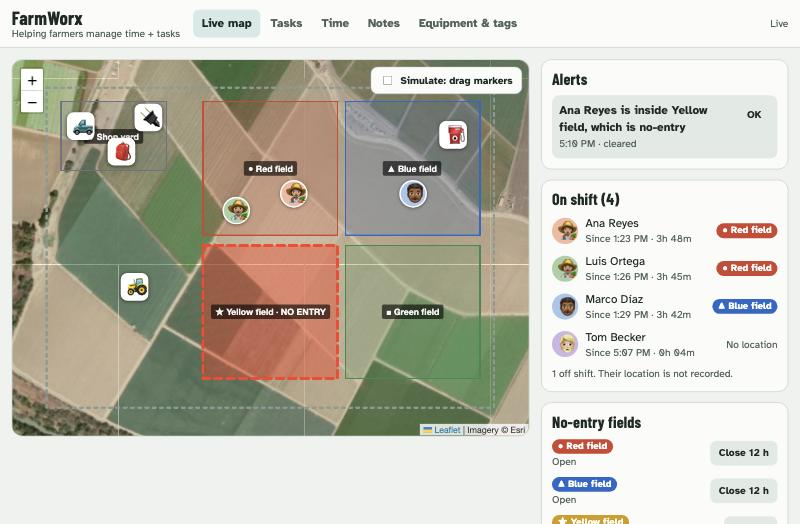
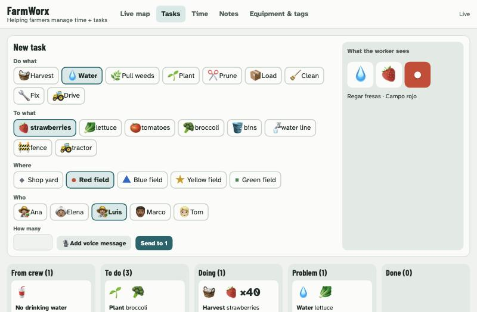
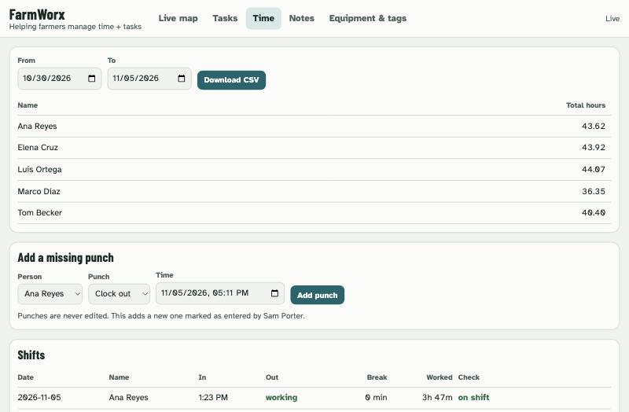

Workers
Minimize requirements to accommodate limited devices, connectivity and technical skills.
A small-farm tool built around two people: the worker with limited time, signal or reading, and the manager who spends the day behind the wheel.
Serving two user groups
Minimize requirements to accommodate limited devices, connectivity and technical skills.
Help overextended managers focus on their highest-value tasks.
Usable without reading a word
For hours behind the wheel


What the job is and how many
In the worker's language, or the boss's own voice
A color and shape that match the place
Farmworkers often misread pictograms without training, and do better when they help design them.
We got two wrong: a wastebasket for harvest bins and a shower for watering.
Sources: pictogram comprehension studies (PubMed 33400115, PMC8207002); FarmWorx research notes
It's the real crew and supervisor screens with a made-up farm. There's nothing to install, no sign-up, and what you do stays in your own browser.
Send a task from the supervisor and watch it land on the worker's phone. Report a problem back. Drag a worker onto the closed yellow field. Tap a badge at the gate.
Tags and location are stand-ins here: test buttons replace NFC, and you drag people on the map. The demo never reads your real location.



Ask anything out loud. It answers from the farm record and can act for you.
What's blocked?
One thing. Mateo stopped at Field 3: the irrigation line is leaking. There's a photo.
Tell Rosa to bring the repair kit.
Sending Rosa, in Spanish: take the repair kit to Field 3. Send it?
Yes.
Sent. Rosa has it. Anything else before you reach the north block?
Sample conversation for illustration. The agent isn't in the live demo.
Who, where, and what could go wrong today
Twelve people on three fields. Field 2 stays closed until noon after spraying.
Any question, any time on the road
What's at the next field? Four people picking, no open problems.
Was the leak fixed? Yes. Rosa sent a photo at 2:10.
Hours, jobs, money, and tomorrow's first call
Eight of ten jobs done. One time punch needs your review.
Sample lines for illustration.
27 sec
distraction can linger after a voice interaction ends
Studies rank listening as the lightest load and talking to an assistant as the heaviest. So the agent mostly talks, and the driver mostly listens.
Sources: AAA and University of Utah studies, 2013–15, before today's AI voice agents; later review of voice interaction.
After spraying, a worker who walks in gets a red screen and a spoken warning.
Workers with no phone tap an NFC badge at a shared gate device.
Trackers and tags flag a tractor or tool that leaves its area.
Actions save on the phone and sync later with their original time.
All four are in the prototype, tested with simulated data. No-entry warnings add to required signs and don't replace them.
Saves punches, tasks and photos on the phone first
Keeps raw events and never edits them
Computes hours, overtime, budget and blockers
Translates, writes reports and answers from those facts
Phone call first, then CarPlay, with read-back
Pay numbers never come from a language model.
Planned design. The crew app, the record and hours calculation exist today. The rest of the facts layer, Claude and voice are still to come.
You need Node 22.13 or newer. Demo data is created for you.
git clone https://github.com/fedor-i/FarmWorx.git
cd FarmWorx
npm startThen open http://localhost:3210. The README has a five-minute walkthrough.